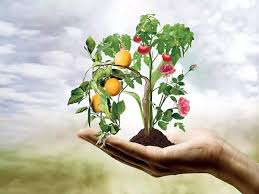
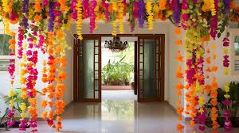
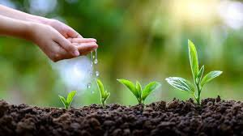

HORTICULTURE DEFFINATION:
USES OF HORTICULTURE
HORTICULTURE USING BEST SOIL
Horticulture is defined as that branch of agriculture concerned
with growing plants that are used by people for medicinal purposes,
etc..

Horticulture is a mainly used by people for Food,for Medicinal
purposes,and flower decorations,......

Horticulture is tha mainly use of best soil is LOAMThis soils is best suited for any
plant growth and its development.such soil is generally found along the rivers
and consists mainly the particles of rocks which are crushed due to folwing stream
